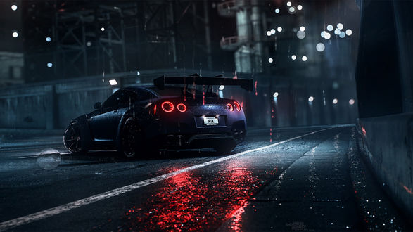

Об автосалоне
В конец
Акции и спецпредложения
Новости
Добро пожаловать на сайт нашего автосалона!
Автомобили
Trade-in
Услуги
Жирный
Серьёзный
Курсив
Акцентированный
Подчёркнутый
1Нижний индекс
2Верхний индекс
«Лучшая машина — новая машина!»
«Если бы я делал только то, что хотят от меня люди, они бы до сих пор ездили на каретах».
МКПП
- BMW
- Mercedes
- Lada
- Купе
- Тип закрытого кузова легкового автомобиля. Отличается двумя дверьми, одним или двумя рядами сидений и структурно отдельным багажником, без подъёмной двери в задней стенке.
- Хэтчбэк
- Название кузова легкового автомобиля с одним или двумя рядами сидений, дверью в задней стенке и укороченным задним свесом
- Седан
- Закрытый кузов легкового автомобиля с багажником, структурно отделённым от пассажирского салона, без подъёмной двери в задней стенке, обычно с двумя или тремя рядами полноразмерных сидений.

В начало
Контакты
Наш телефон 01234567890
Наша почта sendemail@gmail.com